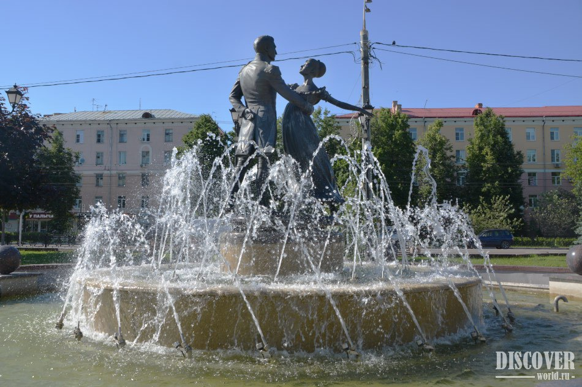

Добро пожаловать в Подольск

1. Памятник Подольским курсантам
Молодые бойцы Красной армии держали оборону на Варшавском шоссе в районе Юхнова, Медыни, Ильинского, Малоярославца и Детчино в ходе битвы за Москву начального периода Великой Отечественной войны. Вместе с частями 43-й армии они сдержали натиск немецко-фашистских войск и помогли выиграть время для подтягивания резервов РККА к Москве. В результате направление на Москву через Подольск по Варшавскому шоссе было закрыто для противника.
Молодые бойцы Красной армии держали оборону на Варшавском шоссе в районе Юхнова, Медыни, Ильинского, Малоярославца и Детчино в ходе битвы за Москву начального периода Великой Отечественной войны. Вместе с частями 43-й армии они сдержали натиск немецко-фашистских войск и помогли выиграть время для подтягивания резервов РККА к Москве. В результате направление на Москву через Подольск по Варшавскому шоссе было закрыто для противника.

2. Фонтан "Первый бал Наташи Ростовой"
Фонтан "Первый бал Наташи Ростовой" - это композиция, посвященная героям романа «Война и мир». По центру фонтана находится скульптура, которая изображает как Наташа Ростова кружится в танце с Андреем Болконским. Как всем известно, автор произведения «Война и мир» - Лев Николаевич Толстой. Памятник главным героям находится на бульваре Льва Толстого, названном в честь великого писателя. Скульптурная группа и фонтан "Первый бал Наташи Ростовой" были открыты 5 октября 2014 года.
Фонтан "Первый бал Наташи Ростовой" - это композиция, посвященная героям романа «Война и мир». По центру фонтана находится скульптура, которая изображает как Наташа Ростова кружится в танце с Андреем Болконским. Как всем известно, автор произведения «Война и мир» - Лев Николаевич Толстой. Памятник главным героям находится на бульваре Льва Толстого, названном в честь великого писателя. Скульптурная группа и фонтан "Первый бал Наташи Ростовой" были открыты 5 октября 2014 года.
3. Краеведческий музей
Краеведческий музей — музей, объектом деятельности которого является документация и презентация исторического, природного и культурного развития определённого населённого пункта или географического региона. Основными фондами такого музея являются связанные с историей этого региона экспонаты, в числе которых могут быть, например, археологические находки; произведения искусства или ремесла; документы и изобразительные материалы, фиксирующие исторические события, происходившие в этой местности; предметы быта; мемориальные предметы, связанные со знаменитыми земляками; материалы, отражающие экономическое и техническое развитие края, и т. д.
Краеведческий музей — музей, объектом деятельности которого является документация и презентация исторического, природного и культурного развития определённого населённого пункта или географического региона. Основными фондами такого музея являются связанные с историей этого региона экспонаты, в числе которых могут быть, например, археологические находки; произведения искусства или ремесла; документы и изобразительные материалы, фиксирующие исторические события, происходившие в этой местности; предметы быта; мемориальные предметы, связанные со знаменитыми земляками; материалы, отражающие экономическое и техническое развитие края, и т. д.
4. Площадь Славы
В 1971 году архитектурно-скульптурный ансамбль на площади 50-летия Октября, посвященный Великой Отечественной войне, представлял собой большую гранитную плиту с высеченными фигурами советских солдат, рвущихся в бой с гранатами и автоматами, а также словами: «Героям-подольчанам, жизнью своей защитившим Родину, честь и свободу», и зажжен вечный огонь. Авторы памятника Ю. Любимов и Л. Земсков. В начале 2000-х годов, было принято решение реконструировать площадь, дополнив скульптурную композицию памятными объектами, посвященными труженикам тыла.
В 1971 году архитектурно-скульптурный ансамбль на площади 50-летия Октября, посвященный Великой Отечественной войне, представлял собой большую гранитную плиту с высеченными фигурами советских солдат, рвущихся в бой с гранатами и автоматами, а также словами: «Героям-подольчанам, жизнью своей защитившим Родину, честь и свободу», и зажжен вечный огонь. Авторы памятника Ю. Любимов и Л. Земсков. В начале 2000-х годов, было принято решение реконструировать площадь, дополнив скульптурную композицию памятными объектами, посвященными труженикам тыла.
5. Музей-заповедник «Подолье»
Музей-заповедник «Подолье» расположился вдоль реки Пахры на территории парка в историческом центре города. Главным зданием является дом-музей Владимира Ленина, открытый в 1937 году в честь пребывания здесь семьи революционера. Также экспозиции для просмотра доступны в домах Морозовых, Кедровой, Артемьевой, Белоджаева. Внутри помещений — восстановленный интерьер конца XIX века, читальные залы и собрания редких предметов. Общая территория заповедника занимает площадь, равную 19 футбольным полям.
Музей-заповедник «Подолье» расположился вдоль реки Пахры на территории парка в историческом центре города. Главным зданием является дом-музей Владимира Ленина, открытый в 1937 году в честь пребывания здесь семьи революционера. Также экспозиции для просмотра доступны в домах Морозовых, Кедровой, Артемьевой, Белоджаева. Внутри помещений — восстановленный интерьер конца XIX века, читальные залы и собрания редких предметов. Общая территория заповедника занимает площадь, равную 19 футбольным полям.